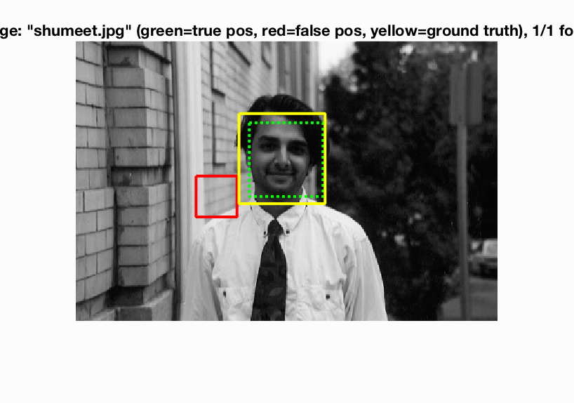
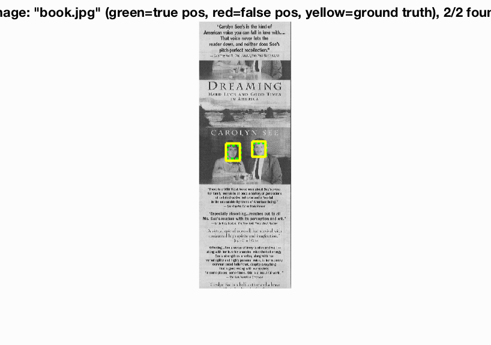

In this project, we perform the task of Face Detection. Face detection is used in various imagine tasks, and even in common objects like camera as shown in the image. The main method used is generation of Histogram Oriented Gradient features using Sliding window, as described in Dalal-Triggs paper. For classifying the sliding windows, we train a linear SVM.
Example of Face detection
In addition to the base implementation, we also implement various add-on techniques to observe and contrast the performance. The performance is compared based on Average Precision, ROC curve and values of confusion matrix (True Positives, False Negatives etc.). We implement the following extra techniques:
The base implementation is quite fast. One complete run can take anywhere from 25s to 2min depending on parameters like HOG cell size, threshold for SVM classification, etc. The training images is the Caltech face dataset, cropped to 36 x 36 sized faces. The non-face training images are random (36 x 36) sized crops of non-face scene images.
Histogram of oriented Gradients decomposes the image into square cells of a given size (typically eight pixels), compute a histogram of oriented gradient in each cell, and then re-normalizes the cells by looking into adjacent blocks. We use vl_feat library to achieve this in Matlab. The main tuning parameter here is the cell size. Each (n x n) dimension cell in the image is described as a (n x n x 31) feature. In our project, the training images are 36 x 36 pixels. We use two cell sizes to contrast the performance.
Once we have have our feature descriptors for faces and non-faces, we must be able to classify a previously unseen image patch. To do so, we train a linear SVM, and tune the lambda parameter to get W and b. This W and b can now be used to classify any new image based on a threshold. We can eliminate the threshold parameter by simply retaining only the top or highest values obtained from (W'*X + b). Here, we tune a threshold as the number of faces in the test image is unknown. Patches of test image whose feature descriptor has a value of (W'*X + b) higher than threshold is classified as face.
To account for face detection of multiple sizes, we train the faces at multiple scale. The scales used in this project are [1, 0.9, 0.7, 0.5, 0.3, 0.1]. Thus, when we have a test image with a larger than trained template (36x36 in our case) size face in it, it will be detected at a low scale on resizing it. HOG feature descriptor gives is the template histograms, which can be visualized as shown below.
|
6x6 HOG cell, Precision Recall Curve. |
Parameter Tuning. |
|
6x6 HOG cell, Bounding Boxes. |
6x6 HOG cell, HOG Template. |
Figure : Example of a good model with 6x6 HOG cell.
|
3x3 HOG cell, Precision Recall Curve. |
Successful detection at multiple scales. |
|
3x3 HOG cell, Bounding Boxes. |
3x3 HOG cell, HOG Template. |
Figure : Example of a good model with 3x3 HOG cell.
Sliding window method: In this method, we find the HOG descriptors of patches of test image, and classiify is using the classifier we trained. For this, various Matlab functions like blockproc, and vl_feat libraries like vl_hog are used. Tuning parameter is the threshold for classifying.
The free parameters in this test give us varied results. The Linear SVM was easy to train to get good accuracy. In fact, almost all values of lambda from 0.0001 to 0.1 gave a classifier resulting in 99.9% - 100% train accuracy. Hence in order to avoid over fitting, we tuned it to get a classifier with slightly lower train accuracy. Lambda of 0.005 to 0.0001 gave us acceptable results.
The second parameter, the threshold, played an extremely important role in the number of misclassificatied bounding boxes etc. Lower the threshold, more number of bounding boxes are classified as true, thus leading to high false positives. As we can see in the parameters image above, low threshold implies more pollution, leading to off-chance true bounding boxes, giving high Average Precision. This is is a false-well performing model.
Figure : Example of how very low threshold will give a off-chance good detection due to pollution.
Increase in threshold implies less bounding boxes are passed into the non-max suppression. Thus this gives a better model with lesser false positives. The downside is that, as we keep increasing the threshold, the number true positives may also be lost.
For Implementing a Histogram of Oriented Gradients, we followed the following steps:
Figure : Implementation of HOG, Flow of steps.
|
Figure : Implementation of HOG, Precision Recall Curve. |

Figure : Implementation of HOG, Bounding Boxes. |
As we have so many computations for gennrating HOG descriptor, we have used blockproc to parallelize the processes. Due to computational limitation, it is an extremely long execution. To increase the speed, we have compromised the advantages of contrast normalization to use simple normalization of blocks of the image. This speedens up the process, and one run can complete in about an hour.
In the interest of time, the positive and negative training features are saved as .mat files. features_pos_myhog.mat and features_neg_myhog.mat. These can me loaded and used anytime with get_hog_feats(...).
The implementation is the same as vl_hog. But the performance suffers for the same parameters as with vl_hog. The Average Precision reduces from 83.5 for a well trained model to 79.6 (best) with out own implementation of HOG. This is probably due to the inaccurate normalization used. Additionally, we reshape the features multiple times, and the order of histograms may be lost. Although it would ideally not matter as the same implementation is used to obtain train and test hog features, the information is jumbled up which may result in the performance slip we observe.
Negative hard mining is the technique to make the classifier more robust by taking taking into consideration the mis-classifications we get in the training data itself. Thus, we have the following sequence of events:
|
Figure : 3x3 HOG cell with Hardmining. |
Figure : Almost no mis-classification with hardmining. |
|
Small font Text is easily misclassified as small scale images. |

Hard Mining makes the classification robust. |
With negative hard mining, the average precision increases by a few points. More notably, the false positives almost disappear. This can be reasoned as a result of robust classification. For a cell size of 3x3, we observe an performance to achieve Average Precision of 85.6. There are ~0-1 false positive bounding boxes per image. Most important part of Negative hard mining is that it does not effect the true positives.
Thus, with a good classifier, we can obtain high precision and high recall for low values of threshold.The effect of NEgative hard mining does not slow down the execution too much. We can have a 6x6 cell size vl_hog in about 33s.
We have tuned the model such that we don't have too many additional negative features from hard mining. This can result in imbalanced training. At present, the tuning we have done adds ~500 negative features. Thus, we finally have ~6000 positive features, and ~1700 negative features. An attempt to increase the robustness further will simply train a classifier that easily classifies images as non-face.
Negative hard mining increases the number of negative features. To balance this out, we trainined the model using additional positive images. The dataset used is LFW dataset. As our caltech mages were cropped and cleaned, we had to do the same with LFW as well. This is done as follows:
An example of raw LFW image, a image after cleaning and cropping is shown below. To use this data, we can then read it in the same way as we read Caltech images, and vertically stack both the datasets.
|
Figure : Original Image from LFW dataset. |
Figure : Cropped Image from LFW dataset for training (36x36). |
The most noticable change after appending LFW dataset is the steep increase in number of positive train data. We now have ~20000 positive train features. As a result, out model's accuracy is not increasing visibly. With good tuning, we can arrive at a model that successfully removes false negatives. As mentioned above, this can be a result of biased classifier.
In an attempt to balance out the training dataset, we combined LFW dataset, along with hard mining. The time of execution was too high for this combination, with very low change is average precision, and the precision-recall curve was almost the same.
Figure : Training using LFW dataset.
The next technique we used was using an additional classifier. We trained a neural network. This is an implementation of the paper DeepFaces by Yaniv Taigman Et. al. The model is as shown below
This neural network has been implemented python, and the model is saved in as nn_model.h5 in the code folder. The optimizer used is stochastic gradient descent. The model has been built using Keras library. It is a sequential model, with categorical one hot encoding labels. The python code which trains the model reads the Caltech train image dataset, and generates random non-face image patches to train the neural network. Thus, no input is required to be fed to it. The model is required to be trained once, and the python code saves it.
We use thie neural network as an additional classification scheme after detecting the bounding boxes using HOG and SVM. Once we have our bounding boxes, we save the file image name, and the bounding box coordinates to a csv file titled bboxes_for_nnet.csv in code folder. Another python script titled test_model.py evaluates the test bounding boxes and returns a array of classification as 0 and 1. This is then used by our matlab code to obtain a final detection.
Only those bounding boxes that are classified by both the SVM and neural network is classified as a face.
Figure : Neural Network.
Figure : Precision Recall curve
Figure : Good Detection with Neural Network
The performance of adding a Neural Network classifier gives us extremely fluctuating results. The final detection is a lot more dependent on the HOG and SVM parameters. In our analysis, we attempted to pass many bounding boxes to the neural network for classification. In multiple executions of the same code with different parameters, we achieved a highest Average Precision of 88.6 with ~1-2 false positives. The execution time once the neural network was trained was comparable to few other techniques like LFW dataset. Reducing the learning rate of the optimizer, and adding an early stopping callback increased the perfomance in terms of training time.